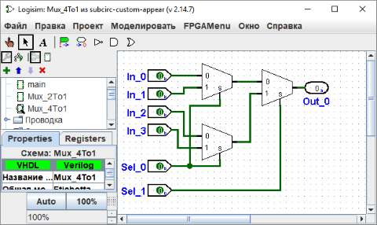

Изменение внешнего вида подсхемы
Внешний вид по умолчанию
Когда подсхема размещена внутри большей схемы, по умолчанию она отрисована в виде прямоугольника с выемкой, обозначающей северный конец чертежа подсхемы. Контакты будут размещены на границе прямоугольника в зависимости от их направления: контакты, направленные на восток на чертеже (и обычно расположенные на западной стороне чертежа) будут размещены на западной стороне прямоугольника в соответствии с их расположением сверху вниз на чертеже. Контакты, направленные на юг на чертеже (и обычно расположенные на северной стороне чертежа) будут размещены на северной стороне прямоугольника в соответствии с их расположением слева направо на чертеже.
Отрисовываемый по умолчанию прямоугольник опционально будет включать несколько букв, которые появятся в середине прямоугольника. Чтобы задать это, выберите Инструмент Выбор ( ) и щёлкните на заднем плане чертежа схемы. Это отобразит атрибуты схемы в таблице атрибутов, включая атрибуты Общая метка, Направление общей метки и Шрифт общей метки. Значение атрибута Общая метка будет отображено в центре прямоугольника; атрибут Направление общей метки определяет, в каком направлении отрисовывается текст, и конечно, атрибут Шрифт общей метки определяет используемый шрифт.
) и щёлкните на заднем плане чертежа схемы. Это отобразит атрибуты схемы в таблице атрибутов, включая атрибуты Общая метка, Направление общей метки и Шрифт общей метки. Значение атрибута Общая метка будет отображено в центре прямоугольника; атрибут Направление общей метки определяет, в каком направлении отрисовывается текст, и конечно, атрибут Шрифт общей метки определяет используемый шрифт.
Модифицированный внешний вид
Внешний вид по умолчанию очень удобен, и фактически, Logisim существовал много лет без каких-либо других вариантов. Однако, если вы предпочитаете, чтобы подсхема была отрисована по-другому, вы можете выбрать Редактировать внешний вид схемы
из меню Проект, и Logisim переключится с привычного интерфейса редактирования чертежа на интерфейс для рисования внешнего вида схемы. (Вы также можете щёлкнуть крайний справа значок ( ) в верхней панели инструментов панели проводника.) Ниже мы редактируем внешний вид мультиплексора 2:1 так, чтобы он отрисовывался в виде обычной трапеции вместо прямоугольника.
) в верхней панели инструментов панели проводника.) Ниже мы редактируем внешний вид мультиплексора 2:1 так, чтобы он отрисовывался в виде обычной трапеции вместо прямоугольника.

При показанном выше внешнем виде мультиплексора 2:1, чертёж мультиплексора 4:1 будет выглядеть следующим образом.

Редактор внешнего вида похож на традиционную программу для рисования, но есть несколько специальных символов для обозначения того, как рисунок работает при размещении его в чертеже схемы. Эти специальные символы не могут быть удалены.
-
Зеленый круг с линией, выходящей из него, который мы будем называть
якорем
. Существует ровно один якорь во внешнем виде каждой подсхемы. Каждый компонент в схеме имеет одну точку, определяющую его положение; пользователь видит это при создании нового компонента: щелчок мыши задаёт только одну точку, и компонент размещается относительно неё (обычно с главным выходом в этой точке). Якорь задаёт эту точку относительно всего рисунка при создании подсхемы.Якорь также задаёт направление внешнего вида; оно указывается направлением линии анха, в котором она выходит из круга. При размещении подсхемы на чертеже, пользователь может изменить направление подсхемы; направление якоря указывает, в каком направлении ориентирован внешний вид. В нашем примере якорь направлен на восток, и каждый экземпляр подсхемы в мультиплексоре 4:1 тоже направлен на восток, поэтому они все отрисованы в том же направлении, что и внешний вид мультиплексора 2:1.
-
Синие круги и квадраты с точками в них - это
порты
подсхемы. Портов в точности столько, сколько входных и выходных контактов в схеме. Порты, соответствующие входам, отрисованы в виде прямоугольников, а соответствующие выходам - в виде кругов. Каждый порт указывает, как провод, соединяющийся со схемой, будет соответствовать входному или выходному контакту на чертеже.Когда вы выбираете порт, Logisim указывает соответствующий контакт с помощью небольшой всплывающей в нижнем правом углу окна диаграммы, на которой соответствующий контакт(ы) показан синим. Этого не происходит, если выбраны все порты.
Панель инструментов содержит инструменты для добавления дополнительных фигур, перечисленные ниже с описаниями того, как клавиши Shift и Alt меняют их поведение. Кроме того, щелчок или перетаскивание мыши с зажатой Control "приклеивает" положение мыши к ближайшему узлу сетки.
|
|
Выделять, перемещать, копировать и вставлять фигуры. |
|
|
Добавлять и редактировать текст. |
|
|
Создать отрезок линии. Перетаскивание мыши с зажатой Shift держит линию под углом, кратным 45°. |
|
|
Создать квадратичную кривую Безье. При первом перетаскивании, когда вы задаёте конечные точки кривой, перетаскивание мыши с зажатой Shift держит конечные точки под углом, кратным 45°. Затем вы щёлкаете, чтобы указать положение управляющей точки; щелчок с Shift обеспечивает симметрию кривой, а щелчок с Alt рисует кривую через управляющую точку. |
|
|
Создать последовательность соединённых линий, вершины которых указываются последовательностью щелчков. Щелчок с Shift обеспечивает то, что угол между предыдущей и текущей вершинами кратен 45°. Дважды щёлкните или нажмите клавишу Enter для завершения фигуры. |
|
|
Создать прямоугольник путём перетаскивания от одного угла до противоположного. Перетащите с Shift, чтобы создать квадрат, или с Alt, чтобы создать прямоугольник, начиная с его центра. |
|
|
Создать прямоугольник со скруглёнными углами путём перетаскивания от одного угла до противоположного. Перетащите с Shift, чтобы создать квадрат, или с Alt, чтобы создать прямоугольник, начиная с его центра. |
|
|
Создать овал путём перетаскивания от одного угла ограничивающей его рамки до противоположного. Перетащите с Shift, чтобы создать круг, или с Alt, чтобы создать овал, начиная с его центра. |
|
|
Создать произвольный многоугольник, вершины которого указываются последовательностью щелчков. Щелчок с Shift обеспечивает, что вершина находится под углом, кратным 45° относительно предыдущей. Дважды щёлкните, нажмите клавишу Enter, или щёлкните на начальной вершине для завершения фигуры. |
Далее: Отладка подсхем.